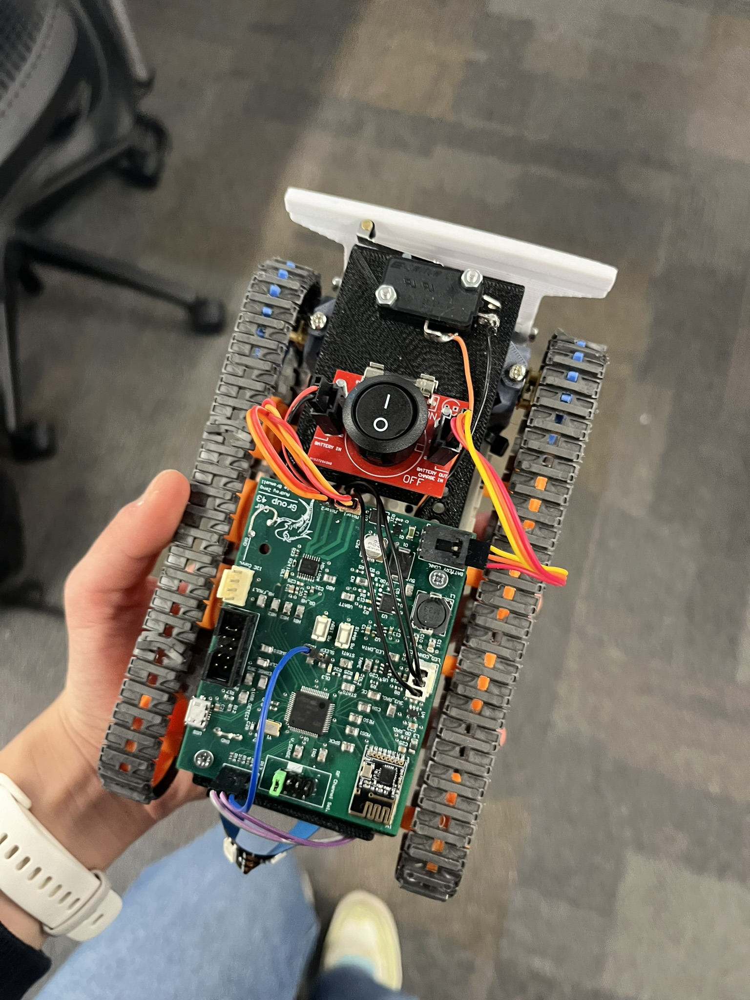
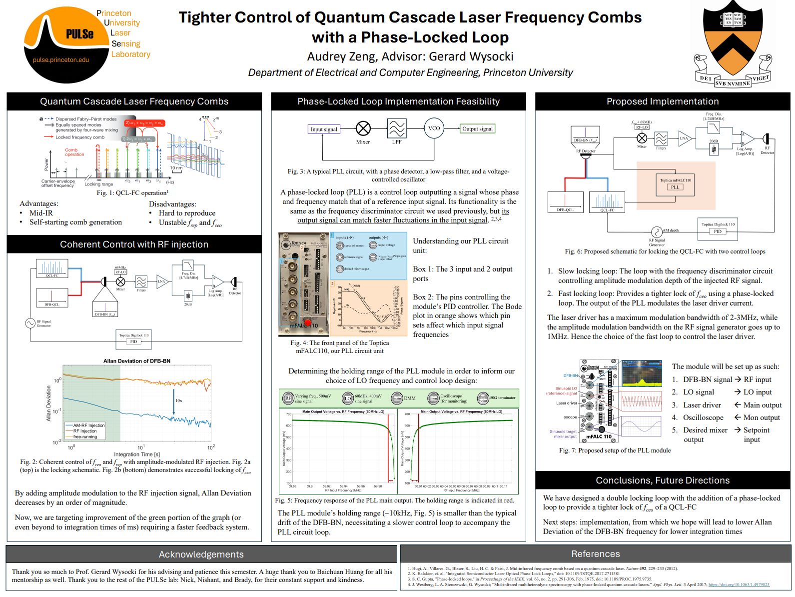
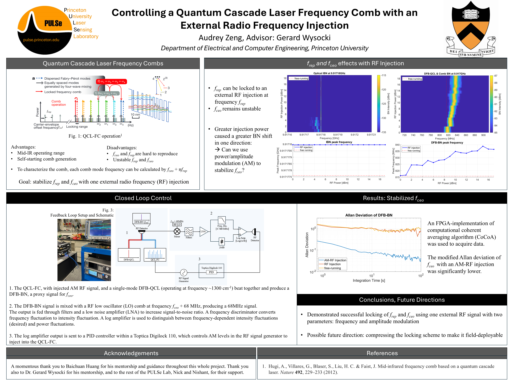
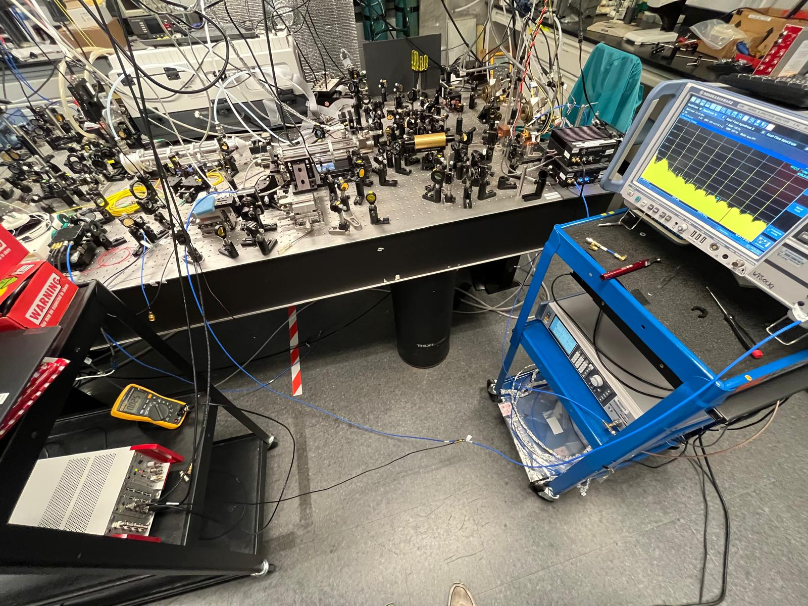
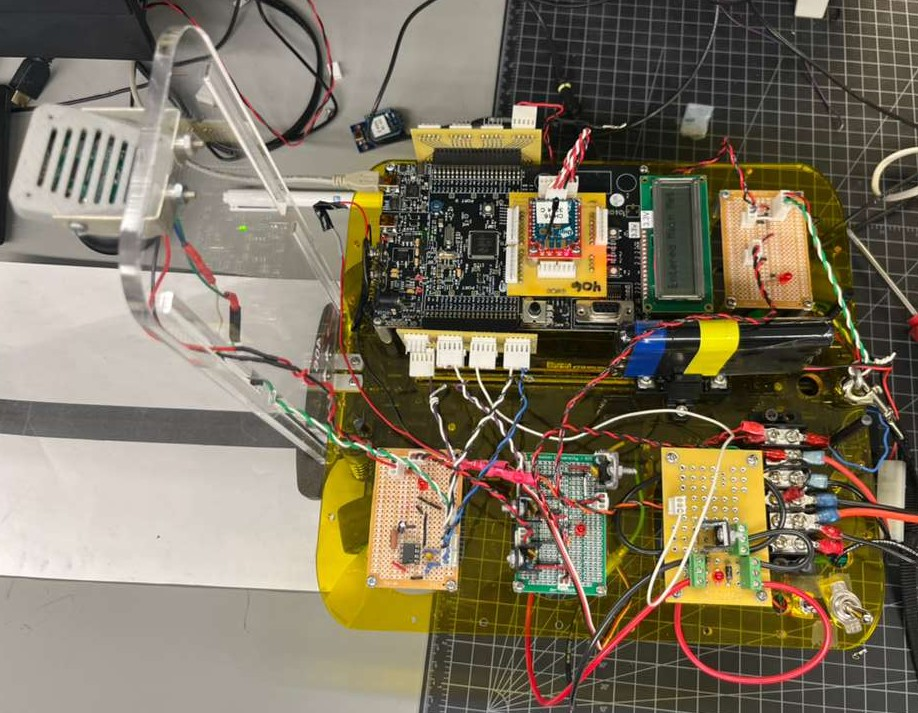
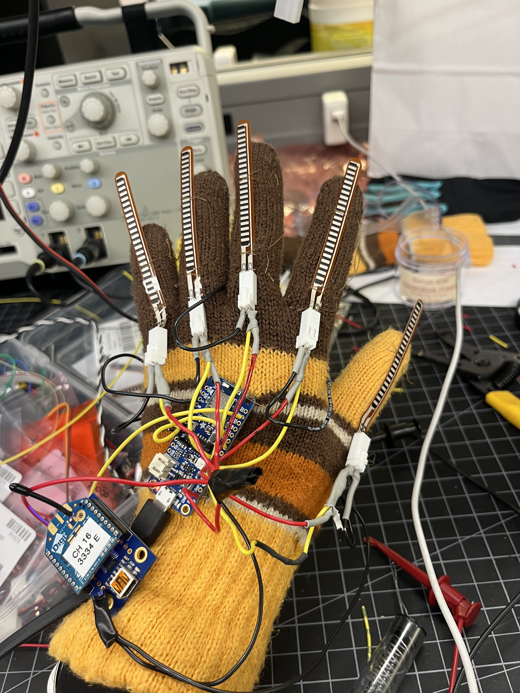
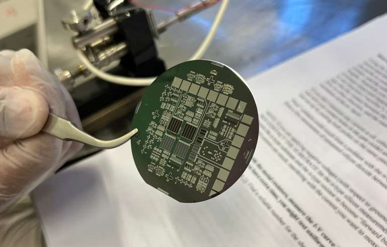

MIT Lincoln Labs: Network Analysis
(summer 2026)
I'm analyzing satellite networks communications!
Embedded Systems
(spring 2026)

My team & I designed, built, and programmed boards which send signals to each other. This one receives a signal from the other (which I can't find a picture of), and will
drive the car motors it's on depending on IMU data from the other. It also powers an LED strips and makes the other play a funny noise if the
car bumper is hit.
Starlink
(May - Aug 2025)
As an engineering intern on the Sales Architecture Team, I developed Starlink Global Enterprise Sales's first testing and reporting suite for network performance,
implementing a test lab and network using UNIX system tools (iperf, tcpdump, ping), Python, routing and switching protocols.
With this test suite, I inaugurated collaboration with external networking vendors to certify joint product offerings.
Read my mentor's endorsement here.
Princeton University Laser Sensing (PULSe Lab)
(Feb 2024 - May 2025)



As an undergraduate researcher at the PULSe lab under Dr. Gerard Wysocki, I designed optical systems with RF circuits to stabilize Quantum Cascade Laser Frequency Combs, designing a double PID loop to control the amplitude modulation of an externally-injected RF signal. For more details,
read my full report here, or read
our publication in the CLEO 2025 proceedings here.
Robotic and Autonomous Systems Lab
(Sept - Dec 2025)


My partner and I built a fully autonomous glove-controlled car, designing and fabricating all our circuit boards from scratch, including a power distribution and motor driver board, a sensing board for speed control,
an analog video demodulation board from scratch, and a flex sensor glove circuit, writing all of our own drivers in embedded C. Alongside drivers for each of our circuit boards, we also wrote Bluetooth firmware for
RF transceivers for communication between the glove and the car, creating custom packets to send information.
Electronic and Photonic Devices
(Sept - Dec 2024)

I fabricated, tested, and characterized a chip on a silicon wafer with n-channel MOSFETs, photodiodes, resistor arrays, solar cells, ring oscillators, and NAND/NOR gates.
Shi Lab
(2020-2023)
I was a research intern at the Shi lab in UC San Diego's Bioengineering Department, where I used Raman spectroscopy to study lipid and protein metabolism in human muscle tissue and Drosophila ovaries. Here is one publication from my time there.